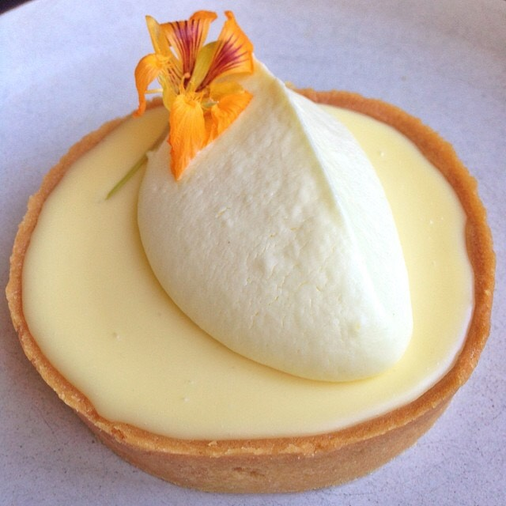

Lemon Cream Tart

Description
I'll get straight to the point and avoid boring you with a long story that you have to scroll miles to get past. This is my favorite lemon cream tart recipe from Tartine Bakery. The lemon curd is velvety and luscious, with the perfect flavor of tart Meyer lemon. When paired with a dollop of whipped cream, it's heaven!
You're going to have to guess the ingredient amounts, though, since I don't remember them. Anyway baking is all about gut feel over exact measurements, right?
Ingredients
Sweet tart Dough
- All-purpose flour
- Butter
- Egg
- Sugar
- Salt
Lemon cream
- Lemons
- Butter
- Egg
- Sugar
- Salt
Whipped cream
- Heavy whipping cream
- Sugar
- Vanilla
Steps
For the tart dough
- Cream butter and sugar until smooth.
- Mix in egg and combine until smooth.
- Add flour all at once and mix until just combined.
- On a lightly floured surface, knead the dough into 4 balls and then flatten them into 4 discs 1/2 in thick.
- Wrap and put in fridge for at least 2 hours or overnight.
For the lemon cream
- Prepare a double boiler.
- Whisk together lemon, sugar, and salt.
- When water is boiling, mix in egg, start whisking mixture over the double boiler.
- Whisk constantly until mixture is 180F, around 10-15 minutes. It should thicken and get fluffy.
- Remove from heat and let cool to 140F. While cooling, cut the butter into 1tbsp chunks.
- When at 140F, mix in the butter with an immersion blender, one chunk at a time.
- Place in fridge to cool.
Baking tart shells
- Preheat oven to 350F.
- Roll out the tart dough to 1/8in thickness.
- Line tart pan with dough.
- Dock holes in bottom of tart dough with fork.
- Bake for 12-15 minutes until golden brown color achieved.
- Let cool to room temp.
Whip cream
- Pour heavy cream, sugar, vanilla in a mixing bowl.
- Mix on medium-high with a stand mixer until medium-firm peaks, 5-8 minutes.
Assembly
- Fill tart shells with lemon cream.
- Top with whipped cream.